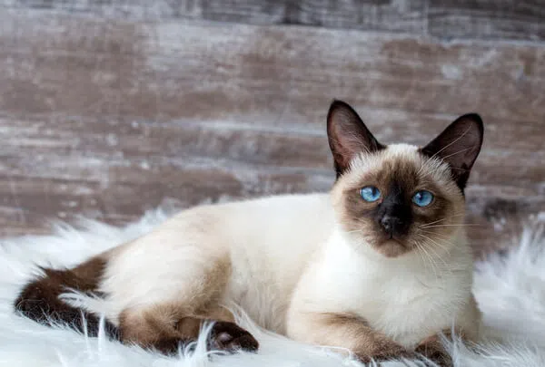
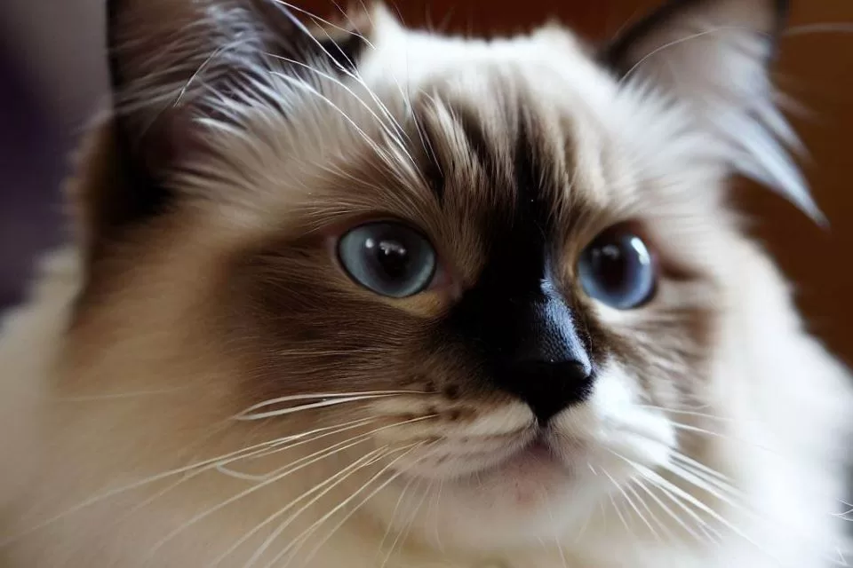
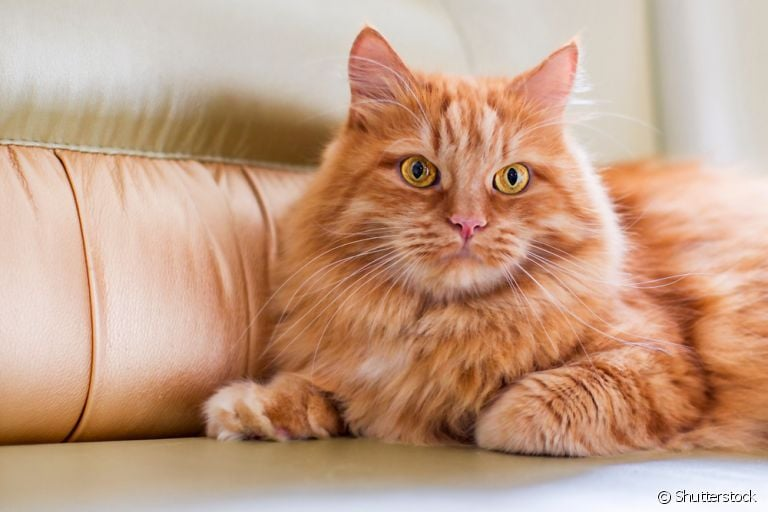

Gatos
É sempre bom ter um amiguinho de estimação!



| Item | Nome | Imagem |
|---|---|---|
| 1 | Gato Siames |  |
| 2 | Gato Ragdoll | |
| 3 | Gato Laranja |
É sempre bom ter um amiguinho de estimação!
| Item | Nome | Imagem |
|---|---|---|
| 1 | Gato Siames | |
| 2 | Gato Ragdoll | |
| 3 | Gato Laranja |